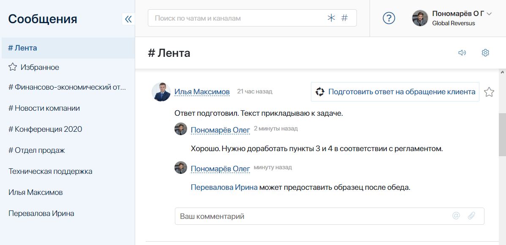
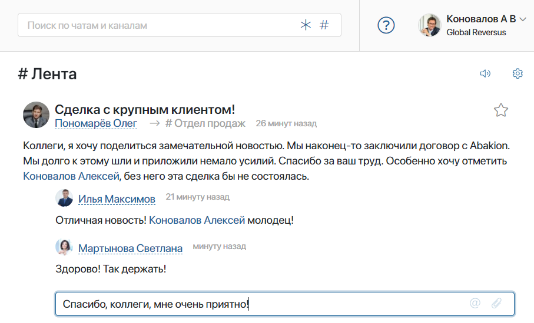
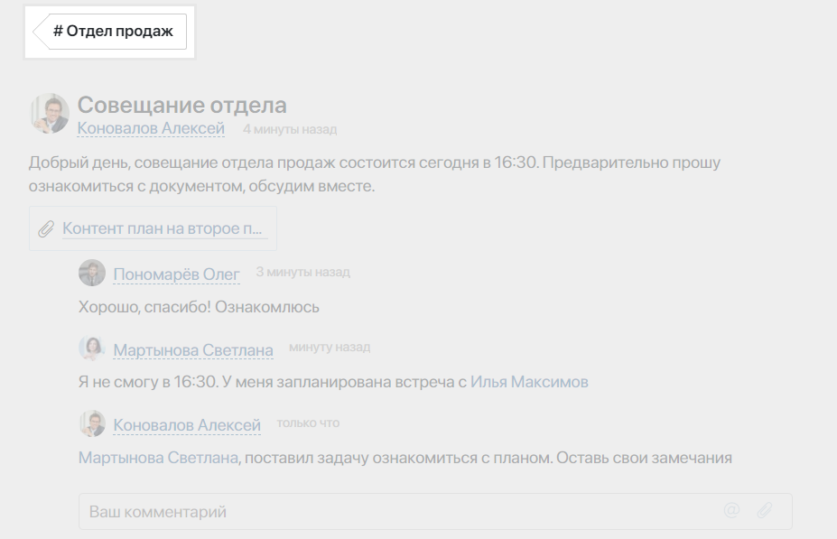
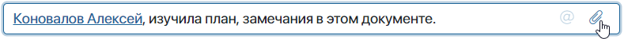
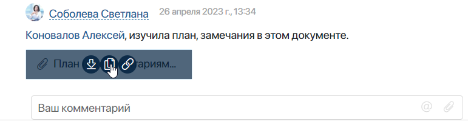
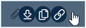
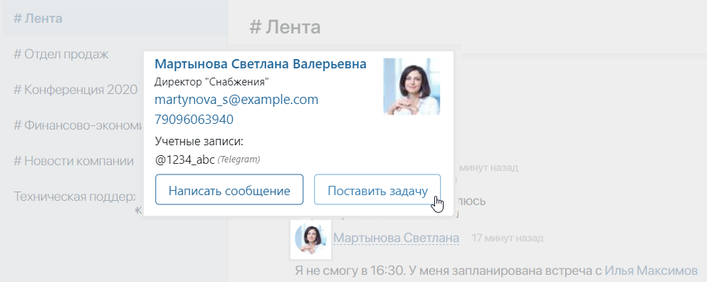

#Лента — это инструмент для своевременного обмена информацией между сотрудниками. Она позволяет наладить внутренние коммуникации в компании привычным и удобным способом.
Здесь отображаются все последние новости из информационных каналов, участником которых вы являетесь, и системные оповещения. В #ленте вы можете просматривать сообщения, комментировать новости и оставлять реакции на них, делиться файлами и создавать задачи коллегам.

В ELMA365 доступны два режима отображения #ленты:
- стандартный режим — все сообщения и оповещения по элементам приложений, задачам и файлам собираются в общую #ленту. Они отображаются в хронологическом порядке, от новых к старым;
- лента по объектам — сообщения группируются по трём вкладкам: чаты, объекты, избранное. Вы можете просмотреть всю переписку и уведомления по каждому отдельному объекту прямо в разделе Сообщения.
В этой статье описана работа с #лентой в стандартном режиме. О работе с лентой по объектам читайте в статье «Лента по объектам».
Как работать с #лентой
#Лента — это первое, что вы видите, попадая в раздел Сообщения. Все непрочитанные сообщения в #ленте подсвечиваются жёлтым цветом. Помимо сообщений от пользователей, здесь также отображаются системные оповещения. Они создаются автоматически, например, при выполнении или переназначении задачи, при работе с документами, при запуске процессов.
Непрочитанные новости и сообщения с новыми комментариями всегда отображаются вверху #ленты. Это позволяет вам оставаться в курсе событий и своевременно получать важную информацию. Просмотренные сообщения выстраиваются в хронологическом порядке, от самых новых к более ранним.
Вы можете:
- раскрыть список последних новостей, нажав Показать еще, или увидеть все полученные сообщения и оповещения, нажав Показать все сообщения. Если у вас есть непрочитанные сообщения, они автоматически отметятся как прочитанные;
- поместить сообщение в папку Избранное, чтобы позднее вернуться к нему. Для этого нажмите значок звёздочки справа от сообщения;
- поставить реакцию на сообщение или комментарий. Для этого нажмите на запись правой кнопкой мыши и выберите смайл;
- отметить все сообщения в #ленте и каналах прочитанными, нажав
 ;
; - отключить всплывающие оповещения о новых сообщениях для определённых каналов или чатов. Для этого нажмите значок рупора в правом верхнем углу. Также вы можете настроить всплывающие оповещения в профиле пользователя;
- перейти к настройке каналов, нажав значок шестерёнки.

Чтобы не перегружать #ленту информацией о запуске процессов, администратор может отключать уведомления об этом.
Комментарии в #ленте
Вы можете комментировать сообщения в #ленте и делиться нужной информацией с коллегами. Ваши ответы будут отображаться в #ленте коллег, а также в соответствующих каналах.

В #ленте вы увидите только несколько последних комментариев к сообщению. Чтобы просмотреть всю историю обсуждения, нажмите на тему сообщения. Тег в левом верхнем углу подскажет, в каком канале идёт переписка.

Как отмечать коллег в комментариях
Воспользуйтесь функцией @упоминания, чтобы привлечь внимание человека к важным сообщениям. Чтобы упомянуть кого-то, начните с ввода символа @ — откроется список всех пользователей. Введите несколько первых букв имени и выберите нужного сотрудника.
Упомянутый пользователь получит всплывающее уведомление о новом комментарии, даже если он отключил оповещение в канале.
В сообщении имя и фамилия упомянутого коллеги будет отображаться в виде ссылки. При нажатии на ссылку любой из участников обсуждения сможет отправить ему личное сообщение или поставить задачу.
Кроме того, вы можете воспользоваться опцией @all, чтобы упомянуть всех участников канала. Тогда все коллеги получат уведомление о сообщении во всплывающем окне.
Как делиться файлами
Добавляя комментарий в #ленте, вы можете поделиться файлами разных форматов. Для этого:
- перетащите один или несколько файлов из папки на компьютере в поле для ввода комментария;
- нажмите значок скрепки в правом углу поля для ввода комментария и в открывшемся окне выберите нужный файл. Чтобы добавить дополнительные файлы, в окне загрузки повторно нажмите значок скрепки.

Прикреплённые файлы будут отображаться рядом с вашим комментарием.

Наведите курсор на файл, чтобы выбрать одно из доступных действий:
 — загрузить файл на компьютер;
— загрузить файл на компьютер;  — выбрать папку из раздела Файлы и сохранить в ней копию документа;
— выбрать папку из раздела Файлы и сохранить в ней копию документа; — скопировать ссылку на загрузку файла;
— скопировать ссылку на загрузку файла;-  — открыть файл в режиме просмотра.
Задачи в #ленте
Из #ленты можно быстро и удобно поставить задачу коллеге.

Подробнее об этом читайте в статье «Создание задачи».